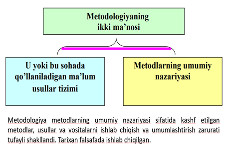
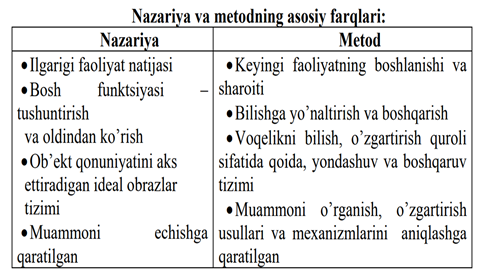
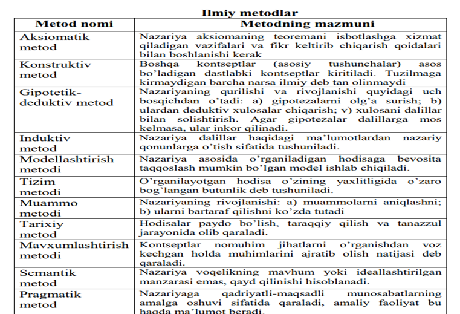
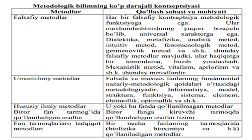
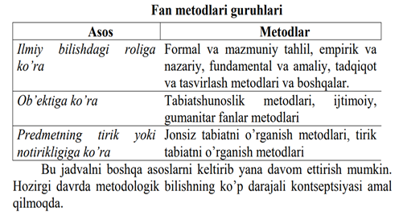
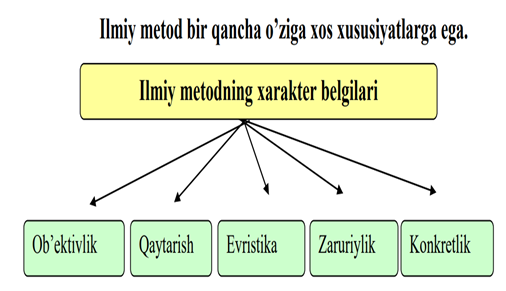

1. Ilm-fan, ilm-fanning maqsadi va vazifalari. - tabiat, jamiyat va tafakkur haqidayangi bilimlarni olishga qaratilgan tadqiqot sohasi. U ma’naviy madaniyatning eng muhim qismidir. Ilm-fanning maqsadi: subyektiv va obyektiv dunyo haqida bilimlarga ega bo‘lish, Ilm-fanning vazifalarifaktlarni to‘plash, ta’riflash, tahlil qilish, umumlashtirish va tushuntirish;tabiat, jamiyat, tafakkur va idrok qonuniyalarini aniqlash;olingan bilimlarni tizimlashtirish;hodisalar va jarayonlarning mohiyatini tushuntirish;hodisalar va jarayonlarni bashorat qilish;olingan bilimlarni amalda qo‘llashning yo‘nalishlari va shakllarini o‘rnatish.
2. Ilmiy-tadqiqot, metodologiyasi va tadqiqot uslubiyoti to’g’risida tushuncha bering. Ilmiy-tadqiqot – bu faktlarni tahlil etish, tasniflash va bir tizimga solish (sintez qilish), real olamning aniq faktlarini talqin qilish va anglab olish, yangi natijalarni yaratish va hodisalar rivojini bashorat qilish. Metodologiya – bu ilmiy-tadqiqotchilik faoliyatining ilmiy tamoyillari va usullari tizimi haqidagi ta’limot. Bilish jarayonida metodologiya tadqiqot ob’ektiga hal qiluvchi ta’sir ko’rsatadi va bilish natijalarini oldindan belgilab beradi. Tadqiqot uslubiyoti – tadqiqot usullarining bir tizimli majmui, tadqiqot uslublari, usullari, texnikalarini qo’llanish va ular yordamida olingan natijalarni talqin qilish qoidalari tizimi.
3. Ilmiy tadqiqot uslubi nima? Ilmiy tadqiqot uslubi bu – muayyan bilish maqsadini hisobga olgan holda, muayyan bilish vazifalarini hal etishga qaratilgan aqliy va (yoki) amaliy operatsiyalar (rusum-qoidalar) tizimidir. Ilmiy-tadqiqot malakalari tadqiqotni yuritish va muayyan lavozimlarda yuqori malakali ishlarni bajarish uchun zarur, deb faraz qilinadi. Uning asosiy maqsadi bu oliy o’quv yurtlarining ilmiy tadqiqotchilik faoliyatini yuritishga (doktorantura, ad’yunkturaga o’qishga kirish yoki talabgor sifatida dissertatsiya tadqiqotini bajarishga) qobiliyatli bitiruvchilarni tayyorlashdir.
4. Ilmiy tadqiqot malakalari va qobiliyatlariga ega bo’lish nima demak? Ilmiy tadqiqot malakalari – bu keng bilimli mutaxassislar bo’lib, ular: - ilmiy ijod metodologiyasi va uslubiyotini, zamonaviy axborot texnologiyalarini egallagan; - turli xil iqtisodiy axborotlarni tahlil etish va sintez qilish malakasiga ega; - ilmiy-tadqiqotchilik faoliyatini yuritishga qodir; - loyihalarni ishlab chiqish va boshqarishni yaxshi biladigan; - pedagogik faoliyat olib borishga tayyor bo’lishlari kerak. Ilmiy tadqiqot malakalari quyidagi qobiliyatlarga ega bo’ladi:- tadqiqot vazifalarini ifodalash; - tadqiqot rejasini tuzish; - axborot texnologiyalarini jalb qilgan holda bibliografik ishlarni bajarish; - zarur tadqiqot uslublarini tanlash, aniq tadqiqot vazifalariga asoslanib, mavjud uslublarni o’zgartirish va yangi uslublarni ishlab chiqish; - olingan natijalarni ishlash, ularni adabiyotlardagi mavjud ma’lumotlarni hisobga olib tahlil qilish va mushohada yuritish; - bajarilgan ishlar yakunlarini tahrir qila olish va matbuotning zamonaviy vositalarini qo’llab, talablarga muvofiq rasmiylashtirilgan hisobotlar, referatlar, maqolalar, ma’ruzalar tezislari shaklida taqdim eta olishlari kerak.
5. Qadimgi davrdan boshlangan ilm-fanning rivojlanish bosqichlarini ko’rsatibbering.
6. Tadqiqotning ob’ekti va predmetini tushuntirib bering. Tadqiqotning ob’ektli sohasi – bu fan va amaliyotning tadqiqot ob’ekti joylashgan sohasi bo’lib, amaliyotda u, masalan, matematika, biologiya, iqtisodiyotning u yoki boshqa ilmiy ixtisosligiga muvofiq bo’lishi mumkin. Tadqiqot ob’ekti – bu muammoli vaziyatni yuzaga keltiradigan muayyan jarayon yoki hodisa, bu muammoning o’ziga xos tashuvchisi, tadqiqotchilik faoliyati yo’naltirilgan narsa. Real olamning izlanuvchi tadqiqot uchun tanlagan sohasi tadqiqot ob’ekti deb ataladi. Masalan, O’zbekistonda shakllanib kelayotgan konsalting xizmatlari bozori tadqiqot ob’ekti hisoblanadi. O’zbekistonning qora metallurgiya sanoat korxonalari tadqiqot ob’ekti hisoblanadi. Tadqiqot predmeti ob’ektning aniq bir qismi bo’lib, uning ichida izlanish olib boriladi. Hodisalar, ularning ayrim tomonlari tadqiqot predmeti bo’lishi mumkin.
7.Tadqiqotning maqsadi, vazifalari va vazifalarning qo’yilishi. Tadqiqot maqsadi – bu tadqiqotchi o’z ishini yakunlashda erishishni xohlagan pirovard natijadir. Tadqiqot maqsadining xarakteri va borishi uning vazifalarini to’g’ri belgilanishiga bog’liqdir. Tadqiqot vazifalari bu ilgari surilgan farazga muvofiq maqsadga erishish uchun yo’llar va vositalarning tanlanishidir. Vazifalarni maqsadga erishish uchun qilinishi zarur bo’lgan narsaning tasdiqlanishi shaklida ifodalash eng ma’qul variantidir. Vazifalarning qo’yilishi tadqiqot maqsadining kichik maqsadlarga bo’linishiga asoslanadi. Vazifalarning sanab o’tilishi unchalik murakkab bo’lmagan vazifalardan eng murakkab, ko’proq mehnat talab qiladigan vazifalarga tomon yurish tamoyili bo’yicha quriladi, ularning soni esa tadqiqotning teranligi bilan belgilanadi.
8. Ilmiy bilishda falsafaning ahamiyati nimalardan iborat? Ilmiy bilishda falsafaning ahamiyati: - dunyoning eng umumiy manzarasini beradi; - bilishning umumiy qonuniyatlari, haqiqat va unga erishish yo’llari bilan qurollantiradi; - fanga yo’naltiruvchi umumiy normalarni beradi; - dunyoqarashlik va qadriyatli ahamiyatga ega yo’nalishlarni ko’rsatadi; - fan nazariyalarini yaratishga ta’sir qiladi; - prognostik funktsiyani bajaradi; - qator holatlarda haqiqat mezoni sifatida amaliyotga qo’shimcha vazifasini o’taydi.
9. Ilmiy-tadqiqot tushunchasi, mazmuni va mohiyatini yoritib bering. Ilmiy-tadqiqotning vazifalari: - tadqiq qilinayotgan hodisani bayon qilish; - sabablar va shartlarni aniqlash; - sabablarni izohlash; - tadqiq qilinayotgan hodisalarning tasnifini qurish;- qonuniyatni aniqlash va asoslash; - mazmunni tushunish va izohlash; - aniqlangan, bayon qilingan va izohlangan hodisa uchun nom berish (ya’ni yangi atamani ilmiy muomalaga kiritish). Ilmiy tadqiqot tushunchasi, ilm-fan sohasida amalga oshiriladigan tajribali va nazariy ishlar to'plamini ifodalovchi tushunchadir. Ilmiy tadqiqotlar, yangi bilimlar va ma'lumotlar olishni, mavzuni chuqurroq tushunishni, nazariy tushunchalarni amaliyotda sinovga tortishni va yangi fikrlar yaratishni maqsad qiladi.Ilmiy tadqiqotning mohiyati, boshqa so'z bilan, ilmiy tadqiqotning qanday usullarga asoslanganligini va qanday maqsadlarga yo'naltirilganligini anglatadi. Ilmiy tadqiqotlar, ilmiy metodlar va protseduralar yordamida amalga oshiriladi va ma'lumotlarni to'plash, tahlil qilish va natijalarni taqqoslash jarayonlarini o'z ichiga oladi.Ilmiy tadqiqotlar, ilmiy fikrlashning yagona qismi emas, balki yangi bilimlar va fikrlar yaratishning asosiy manbai sifatida muhim ahamiyatga ega. Bu jarayonlar, yangi ma'lumotlar olish, o'rganish va ulashishda katta rol o'ynaydi va ilmiy sohada rivojlanishga xizmat qiladi.
10. Ijodiy jarayonning jamiyat taraqqiyotidagi o’rni nimalardan iborat? Ijodiy jarayon jamiyat taraqqiyotida aham ahamiyatga ega bo'lib, uni o'rganish, rivojlantirish va qo'llashning o'ziga xos o'rniga ega. Ijodiy faoliyat, yangiliklar va innovatsiyalar jamiyatning rivojlanishiga, madaniyati va sanoati o'sishiga yordam beradi.Ijodiy jarayonning jamiyat taraqqiyotidagi o'rnini quyidagi ko'rinishda ko'rsatish mumkin:1. Iqtisodiy rivojlanish: Ijodiy faoliyat, innovatsiyalar va yangiliklar iqtisodiy rivojlanishga olib keladi. Yangi mahsulotlar, xizmatlar va texnologiyalar jamiyat uchun yangi imkoniyatlar yaratadi.2. Madaniy rivojlanish: Ijodiy faoliyat madaniy sohada yangiliklar va rivojlanishni olib keladi. San'at, adabiyot, musiqa va boshqa madaniy sohalarda ijodiy jarayonlar jamiyatning madaniyati va identifikatsiyasini kuchaytiradi.3. Sanoat va texnologiyalar rivojlanishi: Ijodiy jarayonlar sanoat va texnologiyalar sohasini rivojlantiradi. Yangi texnologiyalar, avtomatlashtirish va innovatsiyalar sanoat sohasini yanada rivojlantiradi va effektivlikni oshiradi.4. Sotsial rivojlanish: Ijodiy faoliyat inson resurslarini samarali ishlatishga yordam beradi. Yangi ish joylari, ish imkoniyatlari va sotsial proyektlar jamiyatning sotsial rivojlanishiga olib keladi.Ijodiy jarayon jamiyat taraqqiyotida muhim ahamiyatga ega bo'lib, jamiyatni yangiliklarga ochiq bo'lishga, muammolarni hal qilishga va rivojlanishga yo'l ochadi. Bu sababli, ijodiy faoliyatni rivojlantirish va qo'llash jamiyatning umumiy taraqqiyotida muhim ahamiyatga ega.
11. Metod va metodologiya tushunchalarini yoritib bering. Metod (yunon. metods – usul) keng ma’noda yo’l, ijodiy faoliyatning har qanday shakli kabi ma’nolarni anglatadi. Metodologiya tushunchasi ikki asosiy mazmunga ega – faoliyatda qo’llaniladigan ma’lum usullar tizimi (fanda, siyosatda, san’atda va h.k.); tizim haqidagi ta’limot yoki metod nazariyasi. Fan metodologiyasi uning strukturasi, taraqqiyoti, ilmiy-tadqiqot vositalari va usullari, uning natijalarini asoslash yo’llari, bilimni tajribaga tatbiq qilish mexanizmlari va shakllarini o’rganadi. Shuningdek, metodologiya metodlar yig’indisi va faoliyat turi haqidagi ta’limotdir..
12. Metodning asosiy vazifasi nimalardan iborat? Metodning asosiy vazifasi faoliyatning bilish va boshqa shakllarini boshqaruvidan iborat. Biroq: -birinchidan, metod va metodologik muammolarning rolini inkor qilish yoki to’g’ri baholamaslik (“metodologik negavizm”); -ikkinchidan, metodning ahamiyatini bo’rttirish, mutloqlashtirish, uni barcha masalalarning kaliti, ilmiy yangiliklarni yaratishning eng qulay vositasi (metodologik eyforiya), deb tushunish noto’g’ridir. Har qanday metod ma’lum nazariya asosida yaratiladi va tadqiqotning zaruriy sharti sifatida namoyon bo’ladi. Har bir metodning samaradorligi uning chuqur mazmun va mohiyatga egaligi, nazariyaning fundamentalligi bilan asoslanadi. O’z navbatida, metod mazmuni kengayib boradi, ya’ni bilimning chuqurlashishi va kengayishi, tajribaga tatbiq etilishi bilan metodning ko’lami ham o’zgaradi.
13. Metodologiyaning qanday ma’nolari va shakllarini bilasiz?
14. Tarixiylik printsipi talablari nimalardan iborat? Tarixiylik printsipi talablari: - borliq – o’tmishning natijasi va kelajak boshlang’ichi; - hozirgi tadqiqotiy butunlikning qonuniy a’zosi deb qarash; - borliqqa to’la etuklikda qarash zarur; - hozirning ziddiyatlarini aniqlash va hal qilish; - hozirga asoslanib, tizim xususiyatlarini, unsurlarini, funktsiyalarini tasavvur qilish kerak.
15. Ziddiyat printsipi talablari nimalardan iborat? Ziddiyat printsipi talablari: - predmet ziddiyatlarini qarama-qarshiliklarning munosabati sifatida aniqlash; - qarama-qarshi tomonlarni “sof” holda o’rganish; - predmetni qarama-qarshilikning ustun tomonini bilish asosida qarama-qarshiliklar birligi sifatida qarash; - bu ziddiyatning predmetning boshqa ziddiyatlari orasida o’rnini aniqlash; - ziddiyatlarning rivojlanish bosqichlarini tekshirish; - ziddiyatni hal qilish mexanizmini uning rivojlanishi, keskinlashuvi jarayoni va natijasi deb qarash.
16. Metodning vazifasi nimalardan iborat? Metodning vazifasi – bilish jarayonini, u yoki bu ob’ektni amaliy o’zgartirishni tashkil qilish va boshqarishdir. Shuning uchun metod ma’lum qonunlar, usullar, bilish va harakat normalarini o’z ichiga oladi. Metodologiya - umumiy bilish nazariyasining oddiy sohasigina emas. Amaliy jihatdan ahamiyatli metodologiya – bilib olinadigan reallik xarakteridan kelib chiqadigan, ilmiy bilish metodlari xususiyatlarini, ilmiy bilishning konkret sohasida ularning o’zaro aloqasini hisobga oladigan konkret fanlarning metodologiyasidir.
17. Nazariya va metodning asosiy farqlari nimalardan iborat?
18. Ilmiy metodning xarakterli belgilari nimalardan iborat?
19. Fan metodlarining qanday guruhlari mavjud?
20. Metodologik bilimning ko’p darajali kontseptsiyasi nimalardan iborat?
21. Qanday ilmiy metodlarni bilasiz va ularning xususiyatlari nimalardan iborat?
22. Ilmiy tadqiqot metodlarining mazmun-mohiyatini yoritib bering.
23. Tadqiqot bosqichlari va ularning ketma-ketligi. - nazariy tushuntirishni taqozo etuvchi material bilan tanishish va mavjud nazariyalar, qonunlar yordamida nazariy tushuntirishga harakat qilish. Agar buning iloji bo’lmasa: - turli-tuman mantiqiy usullar yordamida mazkur hodisalarning sabab va qonuniyatlari to’g’risida faraz (gipoteza, taxmin)lar qilish; - farazlarning asosliligi va jiddiyligiga baho berish va ularning orasidan haqiqatga eng yaqinini tanlab olish; - gipotezadan oqibatlarni (odatda, deduktsiya yo’li bilan) keltirib chiqarish va uning mazmuniga aniqlik kiritish; - gipotezadan keltirib chiqarilgan oqibatlarni tajribada tekshirish. Bu erda gipoteza yo tajribada isbotlanadi, yo inkor etiladi. Ammo ayrim oqibatlarning isbotlanganligi gipotezaning haqiqiyligini (yoki soxtaligini) kafolatlamaydi. Tekshiruv natijalariga ko’ra, eng yaxshi gipoteza nazariyaga aylanadi. Analiz – ob’ektni amalda yoki fikran tarkibiy qismlarga ajratish; sintez – qismlardan butunni, xuddi shunday tarzda, qayta birlashtirish. Sintez natijasida mutlaqo yangi ob’ekt hosil bo’ladi.
24. Ilmiy tadqiqot metodi va metodologiyasini tushuntirib bering. Ilmiy tadqiqotning bosqchlari:Tadqiqot mavzusini tanlash.Tadqiqotning ish rejasini tuzish.Tadqiqot materiallarini yig’ish va to’plash.Yig’ilgan ma’lumotlarni taxlil qilish va umumlashtirish. Ilmiy-tadqiqot – bu faktlarni tahlil etish, tasniflash va bir tizimga solish (sintez qilish), real olamning aniq faktlarini talqin qilish va anglab olish, yangi natijalarni yaratish va hodisalar rivojini bashorat qilish. Metodologiya – bu ilmiy-tadqiqotchilik faoliyatining ilmiy tamoyillari va usullari tizimi haqidagi ta’limot. Bilish jarayonida metodologiya tadqiqot ob’ektiga hal qiluvchi ta’sir ko’rsatadi va bilish natijalarini oldindan belgilab beradi. . Metod (yunon. metods – usul) keng ma’noda yo’l, ijodiy faoliyatning har qanday shakli kabi ma’nolarni anglatadi. Metodologiya tushunchasi ikki asosiy mazmunga ega – faoliyatda qo’llaniladigan ma’lum usullar tizimi (fanda, siyosatda, san’atda va h.k.); tizim haqidagi ta’limot yoki metod nazariyasi. Ilmiy tadqiqotning bosqchlari:Tadqiqot mavzusini tanlash.Tadqiqotning ish rejasini tuzish.Tadqiqot materiallarini yig’ish va to’plash.Yig’ilgan ma’lumotlarni taxlil qilish va umumlashtirish.
25. Ob’ekt birlamchimi yoki predmetmi? Birlamchi bo’lishining asosi nimada? Tadqiqotda "ob'ekt" va "predmet" terminlari o'zaro bog'liq, ammo ularning ma'nolari bir-biridan farq qiladi. "Ob'ekt" termini, tadqiqotda muhim bo'lgan ma'lumotlar to'plamini ifodalaydi. Bu ma'lumotlar, tadqiqotchilar tomonidan o'rganilgan, to'plangan va tahlil qilingan bo'lishi mumkin.Biror tadqiqot ob'ektining o'ziga xos tavsifiyatlari va xususiyatlari bo'lishi mumkin. Ob'ekt, tadqiqotning asosiy maqsadi yoki muammolarni hal qilish uchun foydalaniladigan narsa bo'ladi.Predmet esa, tadqiqotchilar tomonidan o'rganilayotgan ma'lumotlar to'plamining mavzusini ifodalaydi. Predmet, tadqiqotchilar tomonidan o'rganish uchun tanlangan ma'lumotlar to'plamidir va bu ma'lumotlar ob'ekt birlamchisi yordamida tahlil qilinadi.Bu aytishlar bilan, ob'ekt va predmetning bir-biriga mos kelishuvi shunday: ob'ekt tadqiqotning asosiy maqsadini ifodalaydi, predmet esa o'rganish uchun tanlangan ma'lumotlar to'plamini ifodalaydi. Tadqiqotchilar ob'ekt va predmetlarni tahlil qilishda yordam olishadilar va shu orqali ma'lumotlarni o'rganish va natijalarni chiqarishda muvaffaqiyatli bo'ladi.
26. Tadqiqot mavzusi tanlangandan keyin maqsad belgilab olinadimi yoki vazifalarmi? Nimani birinchi tanlanadi deb hisoblasangiz, uni asoslab bering. Tadqiqot mavzusi tanlangandan keyin, maqsad va vazifalar belgilanadi. Bu jarayonning boshlang'ich qismi maqsadni aniqlashdir. Maqsad, tadqiqotning asosiy o'ziga xos maqsadi yoki qo'llanilishi kerak bo'lgan natijasini ifodalaydi. Bu maqsad, tadqiqotchilar tomonidan o'rganilgan ma'lumotlarni tahlil qilish, muammolarni hal qilish yoki yangi bilimlarni olish uchun belgilanadi.Keyin esa, maqsadni amalga oshirish uchun vazifalar belgilanadi. Bu vazifalar, tadqiqotning maqsadiga erishish uchun kerak bo'lgan amallar va harakatlar bo'lib, tadqiqotning bajarilish tartibi va qadamli ravishda amalga oshirilishi lozim bo'ladi. Vazifalar, tadqiqotchilar uchun yo'l ko'rsatuvchi vazifalar bo'lib, maqsadga erishishda yordam beradi.Buning bilan birinchi tanlanadigan narsa tadqiqot mavzusi bo'ladi, keyin esa bu mavzuga erishish uchun maqsad va vazifalar belgilanadi. Maqsad va vazifalar, tadqiqotchilar uchun yo'l ko'rsatuvchi bo'lib, tadqiqot jarayonini tartibga solishda yordam beradi va maqsadga erishishda muvaffaqiyatli bo'ladi.
27. Metodologiya metodning tarkibida yotadimi yoki metod metodologiyaning tarkibidami? Metodologiya va metod so'zlarining ma'nolari bir-biriga o'xshash bo'lsa-da, ularning foydalanish yo'li va manbalari farq qiladi."Metod" so'zi, amaliy amallarni bajarish uchun belgilangan tartib va usullarni ifodalaydi. Bu usullar va tartiblar, maqsadga erishishda yordam beradi va tadqiqot jarayonini tartibga solishda foydalaniladi. Metodlar, amaliy amallarni bajarish uchun konkretdir va tangibdir."Metodologiya" esa, ilmiy tadqiqotning umumiy usullarini va prinsiplarini ifodalovchi ilmiy dissiplinadir. Metodologiya, tadqiqotning boshlang'ich tuzilishi, maqsad va vazifalarni belgilash, ma'lumotlarni to'plash, tahlil qilish va natijalarni taqqoslash kabi umumiy usullar haqida ma'lumot beradi. Metodologiya, tadqiqotchilar uchun umumiy yondashuvlar va qoidalarni ifodalaydi.Bu sababli, metodologiya metodlarning o'z ichiga olgan umumiy konseptni ifodalaydi va tadqiqotchilar uchun qo'llanish uchun yordamchi bo'ladi. Metodlar esa, amaliy amallarni bajarishda foydalaniladigan tangib usullardir.
28. Induksiya va deduksiyani tushuntirib bering. Ushbu metodlar tadqiqotchi uchun nima imkoniyat yaratadi? Induksiya va deduksiya tadqiqot metodlarining asosiy farqi, ma'lumotlar to'plash va natijalarga yetish uchun foydalaniladigan yondashuvlar va usullar bo'lishidir.1. Deduksiya: Deduksiya, umumiy qonunlardan yuborilgan xulosalarni olingan ma'lumotlar bilan solishtirib borish usulidir. Bu metodda, boshlang'ich qonun yoki nazariyaga asoslangan ifodalar bilan boshlanadi va bu ifodalar asosida ma'lumotlar to'plash, tahlil qilish va natijalarga yetish uchun amaliy ishlar bajariladi. Deduksiya, ma'lumotlar to'plash jarayonida nazariyadan amaliyga o'tishni ta'minlaydi va ma'lumotlar to'plamini tahlil etishda yordam beradi.2. Induksiya: Induksiya, amaliy ma'lumotlardan umumiy qonunlarni olish usulidir. Bu metodda, boshlang'ich amaliy ma'lumotlar to'plash, tahlil qilish va natijalarga yetish jarayonida umumiy qonunlar yoki nazariyalar olinadi. Induksiya, amaliy ma'lumotlardan umumiy qonunlarni olishga yordam beradi va yangi nazariyalar yaratishda foydalaniladi.Induksiya va deduksiya tadqiqotchilar uchun turli imkoniyatlar yaratadi:- Deduksiya, nazariyalar va qonunlarni sinash uchun yaxshi usuldir, chunki boshlang'ich qonunlardan yuborilgan xulosalar bilan boshlanadi.- Induksiya, amaliy ma'lumotlardan umumiy qonunlarni olishda yordam beradi va yangi nazariyalar yaratishga imkoniyat beradi.- Deduksiya va induksiya birgalikda foydalanilganda, ma'lumotlar to'plash va tahlil qilish jarayonida to'g'ri va samarali natijalarga yetish uchun imkoniyat yaratadi.Shunday qilib, induksiya va deduksiya metodlari tadqiqotchilar uchun turli imkoniyatlar yaratadi va ma'lumotlar to'plash, tahlil qilish va natijalarga yetishda foydalaniladi.
29. Maqolani IMRAD talabi asosida yozish talablari nimalardan iborat va ushbu talablar asosida tayorlangan maqolaning qanday afzalliklari bor, ushbu afzalliklar kim uchun qulaylik yaratadi? Aksariyat ilmiy maqolalar IMRAD deb nomlangan formatga muvofiq tayyorlanadi. Bu atama Introduction ( Kirish), Materials and Methods (Usullar va manbalar), Results (Olingan natijalar), And (Va), Discussion (Muhokama) so‘zlarining birinchi harflarini ifodalaydi. Bu tadqiqot ishlarining sarlavhalari yoki tarkibiy qismlarining to‘liq ro‘yxati emas, balki namuna yoki formatni bildiradi; Maqolaning boshqa qismlari: sarlavha, mualliflar, kalit so‘zlar, annotatsiya, xulosa va adabiyotlar ro‘yxati. Bundan tashqari, ba'zi hujjatlarda minnatdorchilik va ilovalar mavjud. Kirish ushbu mavzu bo‘yicha mavjud bilimlarni hisobga olgan holda tadqiqot hajmi va maqsadini tushuntiradi; Materiallar va usullar tadqiqot qanday o‘tkazilganligini tavsiflaydi; Natijalar bo‘limi tadqiqotda topilgan narsalar haqida xabar beradi; Muhokama bo‘limi esa natijalarning ma'nosi va ahamiyatini tushuntiradi va tadqiqotning kelajakdagi yo‘nalishlari bo‘yicha takliflar beradi. Ma’qola jurnalning mualliflarga bergan ko‘rsatmalariga muvofiq tayyorlanishi kerak. Yaxshi kirish qism nisbatan qisqa bo‘lib, nima uchun o‘quvchi maqolani qiziqarli deb topishi kerakligini aytadi, muallif nima uchun tadqiqot o‘tkazganini tushuntiradi va o‘quvchiga maqolani tushunishi va hukm qilishi kerak bo‘lgan fonni beradi. Xususan, kirish o‘rganilgan muammolarning tabiati va hajmini belgilaydi, tadqiqotni oldingi ish bilan bog‘laydi (odatda muammoga aniq tegishli bo‘lgan adabiyotlarni qisqacha ko‘rib chiqish orqali), tadqiqot maqsadlarini tushuntiradi va har qanday maxsus atamalar yoki qisqartmalarni belgilaydi. quyidagi hollarda qo‘llaniladi. Esda tutingki, kirish gipoteza yoki maqolaning asosiy mavzusini mantiqiy ravishda olib boradi va aniq bayon qiladi. Kirish nisbatan qisqa bo‘lishi kerak; ko‘pgina jurnallar 500 dan kam so‘zni tavsiya qiladi. Takrorlashdan saqlaning: (Kirish qismida annotatsiyani takrorlamang).
30. Bitiruv malakaviy ish qanday qismlardan tashkil topadi. Ushbu qismlarning ketma-ketligini belgilashda nimalarga asoslanadi?
31. Fan va ijоd, mеtоd va mеtоdоlоgiya to’g’risida tushuncha bering. Fan - bu rivojlanuvchi, o`sib boruvchi bilim tizimi, ijtimoiy ongning va kishilik sivilizatsiyasi ijodiy bunyodkorlik amaliyotining insonning o`zini qurshagan olamni doimiy va chuqur o`zlashtirishiga, tabiiy va ijtimoiy voqelikning borliq qonuniyatlari to`g‘risida aniq, chuqur, haqqoniy axborot olish, bunday axborotni o`zlashtirish, saqlash, qayta ishlash va undan foydalanishga yo`naltirilgan alohida shaklidir. Bugungi kunda fan hozirgi zamon axborot jamiyatining arxetipidan mustahkam o`rin olgan. Bunda borliqning tuzilishini ijodiy bilish instituti sifatidagi fanning epistemologik, kreativ evristik funksiyasi alohida ro`l o`ynaydi. . Ijod deganda keng ma`noda ob`ektga (butun atrof muhit yoki uning ozmi ko`pmi ajratib olingan, alohida bo`lagiga) sub`ektning (alohida shaxs, ijtimoiy tabaqa, jamiyatning) faol, izchil ta`siri tushuniladi. Mazkur ta`sir jarayonida sub`ekt o`zini qurshagan muhitni o`zgartiradi, shu paytgacha ko`rilmagan, bilinmagan, o`rganilmagan, g‘aroyib va jozibali yangilikni yaratadi yoki kashf etadi. Metod (yunon. metods – usul) keng ma’noda yo’l, ijodiy faoliyatning har qanday shakli kabi ma’nolarni anglatadi. Metodologiya tushunchasi ikki asosiy mazmunga ega – faoliyatda qo’llaniladigan ma’lum usullar tizimi (fanda, siyosatda, san’atda va h.k.); tizim haqidagi ta’limot yoki metod nazariyasi. Fan metodologiyasi uning strukturasi, taraqqiyoti, ilmiy-tadqiqot vositalari va usullari, uning natijalarini asoslash yo’llari, bilimni tajribaga tatbiq qilish mexanizmlari va shakllarini o’rganadi. Shuningdek, metodologiya metodlar yig’indisi va faoliyat turi haqidagi ta’limotdir..
32. Ilmiy tadqiqоt jarayonining asоsiy tushunchalarini keltiring. Ijod deganda keng ma`noda ob`ektga (butun atrof muhit yoki uning ozmi ko`pmi ajratib olingan, alohida bo`lagiga) sub`ektning (alohida shaxs, ijtimoiy tabaqa, jamiyatning) faol, izchil ta`siri tushuniladi. Mazkur ta`sir jarayonida sub`ekt o`zini qurshagan muhitni o`zgartiradi, shu paytgacha ko`rilmagan, bilinmagan, o`rganilmagan, g‘aroyib va jozibali yangilikni yaratadi yoki kashf etadi. Ijodiy jarayon davomida shaxs ham dunyoni o`zgartiradi, ham o`zini yaratuvchi, ijodkor sifatida kashf etadi. Insonning ijodi bu shaxsning tub xususiyati, uning immanent xossasidir: shaxsning, uning qobiliyatlari va ko`nikmalarining rivojlanish darajasi, shuningdek, uning ijtimoiylashganlik darajasi uning ijodiy bunyodkorlik faolligi bilan belgilanadi. Ijod shaxsning bunyodkorlik, yaratuvchilik salohiyatini ro`yobga chiqaradi. Shaxs ijod usuli bilan yangilik yaratadi, xilma xil muammolarni qo`yadi va hal qiladi, ularning o`ziga xos yechimlarini, ba`zan bunday yechimlarga nisbatan betakror yondashuvlar, usullar, metodlarni topadi. Ijodiy faollikda tadqiqotchi, yaratuvchi, olim shaxsining o`ziga xosligi va betakrorligi namoyon bo`ladi. Ijodiy faollik sub`ektga muttasil o`zgaruvchi, rivojlanuvchi, ichki ziddiyatlarga boy ob`ektning kurashga chorlovlariga munosib javob qaytarishga ko`maklashadi. Ijod jarayonining bu jihati ilmiy bilish jarayonida, ayniqsa, yorqin namoyon bo`ladi. Ilmiy tadqiqotdagi barcha yondashuvlar, shakllar, vositalar va metodlar ilmiy xususiyatga ega.
33. Ilmiy yo`nalish, muammо va mavzu tushunchalari to’g’risida tushuncha bering. Ilmiy yo'nalish, tajribali tadqiqotchilar tomonidan amaliy va nazariy usullar bilan olib boriladigan ilmiy faoliyatni ifodalovchi umumiy nomdir. Bu yo'nalishlar, turli sohalarda ma'lumotlar to'plash, tahlil qilish, natijalarni ta'kidlash va yangi bilimlarni yaratish jarayonlarida foydalaniladi.Muammо, ilmiy tadqiqotda hal etilgan muammolar yoki muammolar to'plami bo'lib, bu muammolar tadqiqotchilar tomonidan o'rganilgan va hal etilgan o'zgaruvchilar, sabablarning asosida tahlil qilingan va hal etilgan yechimlar orqali hal etiladi.Mavzu tushunchasi, ilmiy tadqiqotda o'rganilgan muhim mavzular yoki ko'rsatuvlar bo'lib, bu mavzular ilmiy tadqiqotchilar tomonidan tahlil qilingan, o'rganilgan va izlanib chiqilgan. Mavzu tushunchasi, ilmiy tadqiqotning asosiy qismidir va o'z ichiga ilmiy muammolar, masalalar va savollar jamlangan bo'lishi mumkin. Mavzu tushunchasi, ilmiy tadqiqotda o'rganilgan muhim mavzularni aniqlash, tahlil qilish va natijalarga yetish uchun yordam beradi.
34. Ilmiy ijodning vositalari, usullari va metodlari.
35. Tanqidiy tafakkur nima? Tanqidiy tafakkur – ilmiy izlanish, mustaqil fikr, o‘z pozitsiyasi va yondashuvi, qarashlarini dalillash va isbotlash, ijodiy axborot almashish, ijodiy munozara, bag‘rikenglik, boshqalar fikrini eshitish o‘z ilmiy natijalarini tanqidiy baholash, ilmiy muammoga shaxsiy yondashuv, muammo yechimini yaxshi tushunishga olib keladi. Ilm-fan- inson faoliyatining maxsus sohasi bo`lib, uning vazifasi borliq haqida ob`ektiv bilimlarni ishlab chiqish va nazariy tazimlashtirishdan iborat.
36. Nazariya nima? Nazariya- ilmiy bilimlarni umumlashtirish va tizimlashtirishning oliy shaklidir. Nazariya mavjud ob`ektlarni, ular hakidagi ma`lumotlarni, jarayon va hodisalarni tushunish va bilishga, umumlashtirishga, yangilarini bashorat qila olishga imkon beradigan ilmiy tamoyillar va qonunlarni, tadqiqot metodlarini shakllantiradi. Shuningdek, nazariya olingan bilimlardan insonlarning amaliy faoliyatida foydalanish bo`ycha tegishli tavsiyalar manbaasi hamdir.
37. Analiz va sintez ilmiy metodi to’g’risida tushuncha bering. Empirik va nazariy tadqiqotlarida analiz va sintez, deduksiya va induksiya, abstraktlashtirish kabi universal metodlar keng qo`llaniladi. Analiz (taxlil) – ob`ektni qismlarga, bo`laklarga, tomonlarga, elementlarga ajratib, ularning har birining mazmun – mohiyatini o`rganish, bilishdir. Analiz metodi butunni tashkil etgan qismlar, bo`laklar, tomonlar, elementlar ularning butun tarkibidagi o`rni aniqlanadi. Analiz orqali predmet va hodisalarning tarkibi (strukturasi), tuzilishi o`rganiladi va bilinadi. Sintez(ajratib olish) – analiz tufayli ajratilgan bo`laklar, tomonlar, qismlar, elementlarni o`zaro biriktirib, ularni bir butun holga keltirishdir. Sintez metodi tadqiqotchiga butunning bo`laklari, qismlari, tomonlari, elementlari o`rtasidagi va ularning butun bilan bo`lgan aloqa va bog`lanishlarini bilishga imkon beradi. Analiz bilan sintez tadqiqot jarayonidagi bir moddiy yoki mantiqiy amalning ikki tomonidir, ular bir-biri bilan bog`liq va bir-birini to`ldiradi, ularni bir-biridan ajratib bo`lmaydi, chunki tabiat va jamiyatda hamma jarayonlar ko`p tomonlamadir. Ilmiy tadqiqotlarda empirik, elementar-nazariy, tarkibiy-genetik, analiz va sintez metodlari qo`llaniladi. Tadqiqotchi o`rganayotgan predmet yoki xodisalari ustida olib borgan kuzatish va eksperimentlari, analiz va sintezlari asosida hosil bo`lgan empirik faktlar va ma`lumotlarni o`z tafakkurida umumlashtiradi, abstraktlashtiradi va konkretlashtiradi. Tafakkur jarayonida yuz beradigan bu amallar ham ilmiy bilishning umumiy ilmiy metodlarini tashkil etadi. Ilmiy bilishning umumlashtirish, abstraktlashtirish va konkretlashtirish metodlari faqat tafakkur jarayoniga oid bo`lib, ular ilmiy tadqiqotlarning nazariy darajasiga xosdir
38. Ilmiy faoliyat va uning subyektlari to’g’risida tushuncha bering. Ilmiy faoliyat, yangi bilimlar yaratish, ma'lumotlar to'plash, tahlil qilish va natijalarni ta'kidlash jarayonlarini o'z ichiga olgan amaliy va nazariy usullar bilan ifodalovchi umumiy nomdir. Ilmiy faoliyat sub'ektlari olimlar va tadqiqotchilar o'zlarining tadqiqot va ilmiy ishlarida e'tibor qaratadigan aniq sohalar yoki mavzularni bildiradi. Bu fanlar keng doiradagi fanlar va ta’lim sohalarini o‘z ichiga oladi, ularning har biri o‘ziga xos nazariya, metodologiya va amaliyotga ega. Ilmiy faoliyatning ba'zi umumiy mavzulariga quyidagilar kiradi:1. Biologiya: Tirik organizmlar, ularning tuzilishi, funktsiyasi, o'sishi, rivojlanishi va atrof-muhit bilan o'zaro ta'sirini o'rganadigan fan.2. Fizika: Olamni boshqaradigan materiya, energiya, harakat va asosiy kuchlarni o'rganadigan fan.3. Kimyo: Moddalarning molekulyar va atom darajasidagi tarkibi, xossalari va reaksiyalarini o‘rganuvchi fan.4. Matematika: sonlar, miqdorlar, shakllar va naqshlarni hamda ular o‘rtasidagi munosabatlarni o‘rganuvchi fan.5. Psixologiya: shaxslar va guruhlarning ongi, xulq-atvori, his-tuyg'ulari va ruhiy jarayonlarini o'rganadigan fan.6. Sotsiologiya: Jamiyat, ijtimoiy oʻzaro munosabatlar, institutlar va madaniy meʼyorlarni oʻrganuvchi fan.7. Atrof-muhit fani: tabiiy muhit, ekotizimlar va insonning sayyoraga ta'sirini o'rganadi.8. Informatika: Algoritmlar, ma’lumotlar tuzilmalari, dasturlash tillari va kompyuter tizimlarini o‘rganuvchi fan.9. Iqtisodiyot: Jamiyatlarning resurslarni qanday taqsimlashi va ishlab chiqarish, taqsimlash va iste'mol bo'yicha qarorlar qabul qilishini o'rganadi.10. Muhandislik: konstruksiyalar, mashinalar, tizimlar va jarayonlarni loyihalash va qurish uchun ilmiy va matematik tamoyillarni qo'llash.Ushbu ilmiy faoliyat sub'ektlari tadqiqotchilarga o'z sohalaridagi aniq hodisalar, nazariyalar va savollarni o'rganish va tadqiq qilish uchun asos yaratadi. Ushbu mavzularga e'tibor qaratish orqali olimlar o'z sohalarida bilim va tushunishni rivojlantirishga hissa qo'shishlari mumkin.
39. Ilmiy faoliyat yurituvchi shaxslarning huquq va majburiyatlari nimalardan iborat? Ilmiy faoliyat yurituvchi shaxslarning huquq va majburiyatlari quyidagi asosiy nuqtalardan iborat bo'ladi:1. Huquqla- O'z fikrini ifoda etish va ilmiy ko'rsatmalarni amalga oshirish huquqi.- Sifatli, obro'liq va adolatlikni saqlash majburiyatiga ega bo'lishi.- Ilmiy faoliyat yurituvchilari boshqa ilmiy tadqiqotchilar bilan ishbilarmonlikda bo'lishi.- O'z faoliyatini ilmiy etika prinsiplariga muvofiq amalga oshirishi.2. Majburiyatlar:- Ilmiy faoliyat yurituvchilari o'z tadqiqotlarini obro'liq, sifatli va adolatlik prinsiplari asosida amalga oshirishi.- Ilmiy maqolalar, hujjatlar yoki ko'rsatmalar tayyorlash va ularga ilmiy tartib berish majburiyati.- Ilmiy faoliyat yurituvchilari boshqa tadqiqotchilar bilan ishbilarmonlikda bo'lishi va ularning fikrlarini hurmat qilishi.- Ilmiy faoliyat yurituvchilari o'z fikrlarini ifoda etishda va ilmiy natijalarni taqdim etishda obro'liq va sifatli bo'lishi.Ilmiy faoliyat yurituvchilari bu huquq va majburiyatlarga rioya qilish orqali ilmiy jamiyatning rivojlanishiga va yangi bilimni rivojlantirishga xizmat qilishlari kutiladi.
40. Ilm-fan va ishlab chiqarishning uzviy bog‘liqligi deganda nimani tushunasiz?Ilm-fan va ishlab chiqarishning uzviy bog‘liqligi, ilmiy tadqiqot va innovatsiyalar bilan mahsulotni yaratish jarayonining bir-biriga aloqadorligini ifodalaydi. Bu bog'liqlik, ilmiy tadqiqotchilar va ishlab chiqaruvchilar o'rtasidagi hamkorlik va ko'rsatmalar tufayli yangi texnologiyalar, mahsulotlar va xizmatlarni yaratishda muhim ahamiyatga ega.Ilm-fan sohasidagi ilmiy tadqiqotchilar, yangi ideya va konseptsiyalarni rivojlantirish, nazariy va amaliy masalalarni o'rganish va ularga javob topish uchun ilmiy metodlarni qo'llash bilan shug'ullanadi. Ularning olib boradigan ilmiy natijalar, ishlab chiqarish sohasidagi innovatsiyalar va yangi mahsulotlar yaratishda asosiy manba sifatida xizmat qiladi.Ishlab chiqarish sohasidagi ishlab chiqaruvchilar esa ilmiy natijalardan foydalanib, ulardan inspiratsiya olishadi va yangi mahsulotlar yaratishda ularni qo'llab-quvvatlaydi. Ishlab chiqaruvchilar ilmiy tadqiqotchilarning izlagan yechimlarni amalga oshirib, yangi texnologiyalar va mahsulotlar yaratishda ulardan foydalanadi.Bunday uzviy bog'liqlilik, ilmiy jamiyat va ishlab chiqaruvchilar o'rtasidagi ishbilarmonlik va ko'rsatkichlarni oshiradi, yangi innovatsiyalar va mahsulotlar yaratishda muvofaqiyatga erishish uchun zarur bo'ladi. Bu esa yangi texnologiyalar, sifatli mahsulotlar va xizmatlar yaratish orqali ijtimoiy-iqtisodiy rivojlanishga xizmat qiladi.
41. Qanday ilmiy darajalar va ilmiy unvonlar bor va ularni berish tartiblari qanday? 1. Bakalavr darajasi: Bakalavr darajasi o'quv yili 4 yil davomida o'tkaziladi. Bakalavriat talabalari ilmiy tadqiqotlar va amaliy mashg'ulotlar asosida o'zlarini rivojlantirish, nazariy bilimlarni o'rganish va amaliyotda qo'llash bilan shug'ullanishadi. Bakalavr darajasini olish uchun bitiruvchi ishi (bitiruvchi loyiha) tayyorlash va muvaffaqiyatli himoya qilish zarur.2. Magistratura darajasi: Magistratura darajasi o'quv yili 2 yil davomida o'tkaziladi. Magistrantura talabalari bakalavr darajasini olganlar bo'lishi kerak. Magistratura talabalari ilmiy tadqiqotlarni olib borish, nazariy bilimlarni chuqurroq o'rganish va amaliyotda qo'llash bilan shug'ullanishadi. Magistratura darajasini olish uchun magistratura dissertatsiyasini tayyorlash zarur.3. Filosofiya doktori (PhD): Filosofiya doktori darajasi o'quv yili 3 yil davomida o'tkaziladi. Filosofiya doktori talabalari magistratura darajasini olganlar bo'lishi kerak. Filosofiya doktori talabalari o'z sohasidagi muhim ilmiy masalalarni tahlil qilish, yangi ilmiy natijalarni olib borish va ilmiy tadqiqotlarni amalga oshirish bilan shug'ullanishadi. Filosofiya doktori darajasini olish uchun dissertatsiyani tayyorlash zarur. Ilmiy unvonlar esa quyidagi tartibda beriladi:1. Kandidat ilmiy unvoni: Kandidat ilmiy unvoni filosofiya doktori dissertatsiyasini muvaffaqiyatli himoya qilganlar va ilmiy sinovdan o'tganlar beriladi.2. Doktor ilmiy unvoni: Doktor ilmiy unvoni filosofiya doktori dissertatsiyasini muvaffaqiyatli himoya qilganlar va ilmiy sinovdan o'tganlar beriladi.Ilmiy darajalar va unvonlar O'zbekiston Respublikasi Prezidentining 2019 yil 21-sonli "Ilmiy kadrlarni tayyorlash tizimini takomillashtirish"gi qaroriga muvofiq beriladi. Bu tartibga asosan O'zbekiston Respublikasi Oliy va o'rta ta'lim vazirligi tomonidan belgilangan qoidalar asosida amalga oshiriladi.
42. Ilmiy ekspertiza nima va u nima uchun kerak? Ekspertiza – asoslangan xulosa bergan holda maxsus bilimni talab etuvchi biror masalani tadqiq etish. Ilmiy ekspertiza, bilim va tadqiqot sohasidagi kishilarning ma'lum bir so'rovnoma yoki muammoga ilmiy metodlar va texnikalar orqali qaror qilish va o'z fikrini bildirish jarayoni sifatida tavsiflanadi. Bu jarayon odatda ilmiy tadqiqotchilar, olimlar, professorlar va mutaxassislar tomonidan amalga oshiriladi va ularning so'rovnoma yoki muammoga ilmiy ravishda yondashgan fikrlari va natijalari bilan ta'minlanadi.Ilmiy ekspertiza, ilmiy metodlarni, nazariyalarni va amaliyotni samarali bir tarzda birlashtirib, muammolarni yechish va masalalar yechishda yordam beradi. Bu jarayon odatda ilmiy jurnallarda maqolalar, konferensiyalarda hujjatlar yoki davlat organlariga berilgan ilmiy ko'rsatmalarda amalga oshiriladi.Ilmiy ekspertiza, ilmiy tadqiqotning muhim qismi sifatida qaraladi va yangi bilimni rivojlantirishda katta ahamiyatga ega. Ilmiy ekspertizani amalga oshirish uchun ilmiy metodlarga va texnikalarga erkinlik, obro'liq va adolatlikni saqlash shart
43. Ilmiy faoliyat natijalarini tijoratlashtirish qanday amalga oshiriladi? Ilmiy faoliyat natijalarini tijoratlashtirish uchun quyidagi amallar amalga oshiriladi:1. Patent olish: Ilmiy faoliyat natijalari, masalan, yangi texnologiyalar, mahsulotlar yoki usullar bo'yicha olingan intellektual mulkni himoya qilish uchun patent olish mumkin. Patentlar o'zlashtirish huquqini beradi va yangi mahsulotlarni sotishga imkoniyat yaratadi.2. Lisensiyalash: Ilmiy faoliyat natijalarining tijoratlashtirilishi uchun lisensiyalash usullari ham mavjud. Bu, boshqa kompaniyalar yoki shaxslarga ilmiy faoliyat natijalarini ishlatish huquqini berishni tafsilotlari bilan belgilangan shartlar asosida amalga oshiriladi.3. Start-up loyihalarni rivojlantirish: Ilmiy faoliyat natijalaridan biri hamkorlikda start-up loyihalarini rivojlantirishdir. Bu loyihalar, yangi mahsulotlarni yaratish, texnologiyalarni ishlab chiqish va sotish uchun qo'llaniladi.4. Savdo markazlarida ommaviy ko'rsatishlar: Ilmiy faoliyat natijalarini tijoratlashtirish uchun savdo markazlarida ommaviy ko'rsatishlar o'tkazilishi ham muhimdir. Bu ko'rsatishlar orqali ilmiy faoliyat natijalarining tadbirlar, konferensiyalar yoki chet el savdo markazlarida tanitilishi va sotilishi mumkin.5. Biznes inkubatorlarda ishlab chiqarish: Biznes inkubatorlar, ilmiy faoliyat natijalarini tijoratlashtirish uchun ideal muhitni taqdim etadi. Bu orqali innovatsion mahsulotlarni ishlab chiqarish, sotish va tijoratga chiqarishda yordam beriladi.Ilmiy faoliyat natijalarini tijoratlashtirishda muvaffaqiyatli bo'lish uchun innovatsion yondashuv, marketing va tijorat bilimlari bo'yicha mutaxassislar bilan ishlash juda muhimdir.
44. Fundamental, amaliy va eksperimental tadqiqotlarga tushuncha bering. 1. Fundamental tadqiqotlar: Fundamental tadqiqotlar, asosiy ravishda ilmiy konseptsiyalarni tushunish va o'rganishga yo'naltirilgan tadqiqotlar hisoblanadi. Bu tadqiqotlar, ilmiy nazariyalar va prinsiplar asosida qo'llaniladi va yangi bilim sohasidagi bo'sh joylarni to'ldirish uchun muhimdir. Masalan, fizikada fundamental tadqiqotlar, atomlarning strukturasini va xarakteristikalarini tushuntirishga yo'naltiriladi.2. Amaliy tadqiqotlar: Amaliy tadqiqotlar, nazariy bilimlarni amaliyotga o'tkazish va sinovdan o'tkazish uchun amalga oshiriladigan tadqiqotlar hisoblanadi. Bu tadqiqotlar, laboratoriya, terma laboratoriya yoki yashash zonasi kabi muhitlarda amalga oshiriladi. Amaliy tadqiqotlar, ilmiy nazariyalarni sinovdan o'tkazish, nazariy ma'lumotlarni mustahkamlash va yangi ma'lumotlarni topish uchun muhimdir.3. Eksperimental tadqiqotlar: Eksperimental tadqiqotlar, ilmiy nazariyalarni amaliy shaklda sinovdan o'tkazish uchun amalga oshiriladigan tadqiqotlar hisoblanadi. Bu tadqiqotlar, mahsulotlar, texnologiyalar yoki usullar yaratish va sinovdan o'tkazishda qo'llaniladi. Eksperimental tadqiqotlar, yangi innovatsiyalarni yaratish, mahsulotlarni rivojlantirish va sotishda muhim rol o'ynaydi.Bu uch taqqoslashning har biri ilmiy faoliyatning turli yo'nalishlarini o'rganishda va rivojlantirishda juda muhimdir. Fundamental tadqiqotlar asosiy ilmiy konseptsiyalarni tushunishga yordam beradi, amaliy tadqiqotlar ilmiy bilimlarni amalga oshirishga yordam beradi va eksperimental tadqiqotlar yangi mahsulotlarni yaratish va sinovdan o'tkazishda muhim rol o'ynaydi.
45. Fundamental va amaliy tadqiqotlar qanday bosqichlardan iborat? Fundamental va amaliy tadqiqotlar o'zaro farq qiladigan bosqichlardan iborat. Quyidagi bosqichlar fundamental va amaliy tadqiqotlarni ajratib beradi:1. Maqsad: Fundamental tadqiqotlar, ilmiy konseptsiyalarni tushunish va o'rganishga yo'naltirilgan bo'lib, ilmiy nazariyalarni mustahkamlash va yangi ma'lumotlarni topish uchun amalga oshiriladi. Amaliy tadqiqotlar esa, nazariy bilimlarni amaliyotga o'tkazish va sinovdan o'tkazish uchun amalga oshiriladi.2. Metodlar: Fundamental tadqiqotlar, ilmiy nazariyalarni sinovdan o'tkazishda qo'llaniladigan metodlar va texnikalar asosida amalga oshiriladi. Bu tadqiqotlar, matematik modellar, teorik analizlar va laboratoriya sinovlari kabi metodlardan foydalanadi. Amaliy tadqiqotlar esa, nazariy bilimlarni amaliy shaklda sinovdan o'tkazish uchun amalga oshiriladi va laboratoriya, terma laboratoriya yoki yashash zonasi kabi muhitlarda amalga oshiriladi.3. Natijalar: Fundamental tadqiqotlar, ilmiy bilim sohasidagi gaplarni to'ldirish, ilmiy nazariyalarni mustahkamlash va yangi ma'lumotlarni topishda muhim rol o'ynaydi. Bu tadqiqotlar, ilmiy konseptsiyalarni tushunishda yordam beradi. Amaliy tadqiqotlar esa, nazariy bilimlarni amalga oshirish va sinovdan o'tkazishda foydalaniladi va mahsulotlar yoki usullar rivojlantirishda muhim rol o'ynaydi.Shunday qilib, fundamental va amaliy tadqiqotlar maqsad, metodlar va natijalar bo'yicha farqlanadi va ilmiy faoliyatning turli yo'nalishlarini rivojlantirishda muhim rol o'ynaydi.
46. Ilmiy tadqiqotlar olib borishda asosan qanday usullardan foydalaniladi? Ilmiy tadqiqotlar olib borishda asosan quyidagi usullardan foydalaniladi:1. Anketlar va sorovnomalar: Bu usul, insanlardan bilgi to'plash uchun so'ralgan savollar to'plamini o'z ichiga oladi.2. Observatsiya: Bu usulda tadqiqotchilar obyekt (shaxs yoki jamaat)ni ko'rib chiqish, muvofiqlikni tekshirish va ma'lumot to'plash uchun obyektning harakatlarini kuzatishadi.3. Eksperiment: Bu usulda tadqiqotchilar ma'lumot to'plash uchun biror o'zgaruvchaning o'zgarishini boshqarish uchun tajribalar o'tkazadi.4. Intervyu: Bu usulda tadqiqotchilar odamlar bilan bireylik muloqotlar olib, ularning fikrlarini, tajribalarini va ma'lumotlarini olishadi.5. Dokument tahlili: Bu usulda tadqiqotchilar ma'lumotlarni, hujjatlarni, maqolalarni va boshqa dokumentlarni tahlil qiladi.Bu usullar ilmiy tadqiqotlar olib borishda odatiy ravishda ishlatiladi va har biri xususiy maqsadlarga mos ravishda foydalaniladi
47. Ilmiy tadqiqot ishlarida modellashtirish nima? Modellashtirish ko`p bosqichli jarayondir. Uning 1-bosqichi modelni qurishdir. Qurilgan modelning original bilan mosligini aniqlash modellashtirishning 2-bosqichidir. Modellashtirishning 3- bosqichi - bu model asosida hosil qilingan bilimni originalga tadbiq etishdir. Modellashtirishning so`nggi, 4-bosqichi esa model orqali ega bo`lingan yangi bilimning haqiqatligini aniqlashdir.Tabiatiga ko`ra modellarni 2 guruhga bo`lish mumkin: 1) moddiy modellar 2) fikriy modellar Moddiy modellar moddiy jismlardan yasalgan modellardir. Fikriy modellar esa til belgilari, tildagi simvollar, har xil kodlar, EHM dasturlari va shular kabilardir. Modellashtirish metodi o`rganilayotgan ob`ektga tuzilishi yoki funksiyasiga ko`ra unga o`xshash lekin uning o`zi emas, uning nusxasini yaratib, shu nusxa orqali haqiqiy ob`ektning tegishli xossa va xususiyatlarini o`rganishdir. Ilmiy tadqiqotlarda bu usulning vazifasi odatda, tekshirilayotgan ob`ektning bevosita originalida o`rganishning iloji bo`lmagan paytda uning asliga o`xshash, unga mos moddiy yoki fikriy nusxasini, ya`ni modelini (model - lotincha modele - nusxa, shartli obraz, sxema ma`nolarini bildiradi) yasab, shu model asosida originalni o`rganishdan iboratdir. Modellashtirish va modelning o`ziga misol qilib, biz globusni olishimiz mumkin.
48. Ilmiy tadqiqotlarda statistik yondashuv. Statistik yondashuv, ilmiy tadqiqotlarda ma'lumotlarni to'plash, tahlil qilish va ma'lumotlardan foydalanish usullaridan biridir. Bu usulda, ma'lumotlar to'plangan va tahlil qilingan natijalar statistik metodlar va dasturlar yordamida ko'rsatiladi. Statistik yondashuvning asosiy vazifalari quyidagilar bo'lishi mumkin:1. Ma'lumotlarni to'plash va tahlil qilish: Statistik yondashuv ma'lumotlarni to'plab, tahlil qilish va natijalarni ta'kidlashda foydalaniladi.
2. Ma'lumotlarni ta'kidlash: Statistik yondashuv ma'lumotlarni aniq va to'g'ri ta'kidlashda yordam beradi.3. Ma'lumotlarni solishtirish: Statistik yondashuv ma'lumotlarni solishtirish va o'rganishda foydalaniladi.4. Prognozlovchi analiz: Statistik yondashuv ma'lumotlar asosida kelajakni bashorat qilish uchun foydalaniladi.
Statistik yondashuvning ilmiy tadqiqotlarda keng qo'llanilishi, ma'lumotlar to'plami bilan ishlash va natijalarni ta'kidlashda yordam beradi. Bu usul ilmiy tadqiqotlarda aniq va amalga oshirilgan natijalarni olishda muhim ahamiyatga ega.
49. Ilm-fanning qanday rivojlanish bosqichlaerini bilasiz va ushbu bosqichlarda o’rta osiyo allomalarining o’rni qanday bo’lgan?O’rta asr Markaziy Osiyo mutafakkirlarining ilmiy tadqiqot muammosiga qo’shgan hissalari.O’rta asrlarda yashagan buyuk bobokalonlarimiz Al–Forobiy, AlFarg’oniy, Al–Xorazmiy, Al–Beruniy, Abu Ali Ibn Sino va boshqalar to’g’risida tinglovchilar keng ma’lumotlarga ega bo’lganlarini hisobga olib, ular tadqiqotining ayrim jihatlarigagina diqqatni qaratamiz. IX-XII asrlarda matematikaning beqiyos darajada rivoj topishi birinchi navbatda matematika bilan bog’liq bo’lgan sohalarda mustaqil fanlar qaror topa boshladi. Astronomiya, geografiya, tarix, meditsina, dorishunoslik, geodeziya, mineralogiya, etnografiya va x.k. shular jumlasidandir. Shuning uchun ham qadimgi yunon mutafakkirlaridan farqli o’laroq, bu davrda Sharq mutafakkirlari orasidan o’zlarini faylasuf deb hisoblamaydigan sof matematik, astronom deb hisoblovchi Muso alXorazmiy, Ahmad al-Farg’oniy, Abu Rayhon Beruniy kabi fan darg’alari etishib chiqdi. Shunday qilib, dunyoviy, tabiiy–ilmiy fanlarning qaror topishi, ularning mustaqil fan sohalari sifatida ajralib chiqish jarayoni XVII asr Evropada emas, balki IX-XI asr musulmon Sharq mutafakkirlari, xususan Markaziy Osiyo allomalarining mashaqqatli izlanishlari tufayli sodir bo’lgan deb hisoblash lozim. Agar IX-XI asr ilmiy tadqiqoti bo’lmaganida XVII-XVIII asr yangi davr Evropa tabiatshunoslik fanlari ham qaror topmagan bo’lur edi. Muso alXorazmiy (783- 850)- Algebra faniga asos soldi,O’nlik pozitsion hisoblash sistemasini yaratdi,Astronomiyani rivojlantirdi,Trigonometriyaga “tekis”, “akslangan sinus”, “tangens”, “kotangens” tushunchalarini kiritdi va jadvallarini keltirdi. Iqlimlar nazariyasini takomillashtirdi, geografiyani shu asosda birinchi bo’lib bayon qildi.
50. G’oya, gipoteza, qonun va uning turlari? Nazariya to’g’risida tushuncha bering.
Nazariya- ilmiy bilimlarni umumlashtirish va tizimlashtirishning oliy shaklidir. Nazariya mavjud ob`ektlarni, ular hakidagi ma`lumotlarni, jarayon va hodisalarni tushunish va bilishga, umumlashtirishga, yangilarini bashorat qila olishga imkon beradigan ilmiy tamoyillar va qonunlarni, tadqiqot metodlarini shakllantiradi. Shuningdek, nazariya olingan bilimlardan insonlarning amaliy faoliyatida foydalanish bo`ycha tegishli tavsiyalar manbaasi hamdir. Gipoteza- ilmiy bashoratning bir turi bo`lib, uning ishonchli ilmiy nazariyaga aylanishi uchun tajribada sinab ko`rilishi va nazariy asoslanishi talab etiladi. Ilmiy qonunlar- ilmiy bilimlar tizimidagi muhim tarkibiy qism bo`lib, ular tabiat, jamiyat va inson tafakkuridagi eng ahamiyatli, ustivor va takrorlanuvchi ob`ektiv ichki aloqalarni aks ettiradi. Ilmiy qonunlar, odatda, umumiy tushunchalar, kategoriyalar sarasiga kiritiladi.
5. Qadimgi davrdan boshlangan ilm-fanning rivojlanish bosqichlarini ko’rsatibbering?

15.Metodologiyaning qanday ma’nolari va shakllarini bilasiz? 

17.17. Nazariya va metodning asosiy farqlari nimalardan iborat? 
22. Ilmiy tadqiqot metodlarining mazmun-mohiyatini yoritib bering.
21. Qanday ilmiy metodlarni bilasiz va ularning xususiyatlari nimalardan iborat? 
20. Metodologik bilimning ko’p darajali kontseptsiyasi nimalardan iborat? 
19. Fan metodlarining qanday guruhlari mavjud? 
18. Ilmiy metodning xarakterli belgilari nimalardan iborat? 